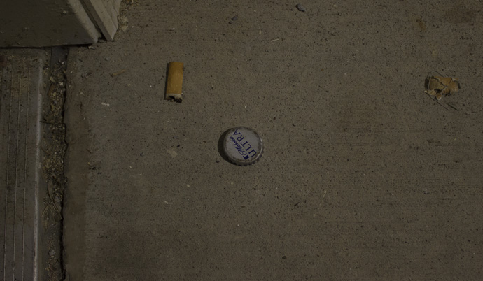

Decay
I am really interested in decay. I chose this topic because I want to bring to light the fact that decay is everywhere, and goes unnoticed in everyday life. I was inspired originally by a structure near my house that is falling apart. Due to the creepiness of the structure, I felt it and other structures like it would make visually enticing images. I decided to use a scientific approach and create a typology of found objects in various stages of decay.
I used several light conditions, distances and perspectives to take my photos. From the photos I took, I edited and sequenced them to create the final images for this book. While looking through this book, try to take some time to think about where you have seen decay.


- 